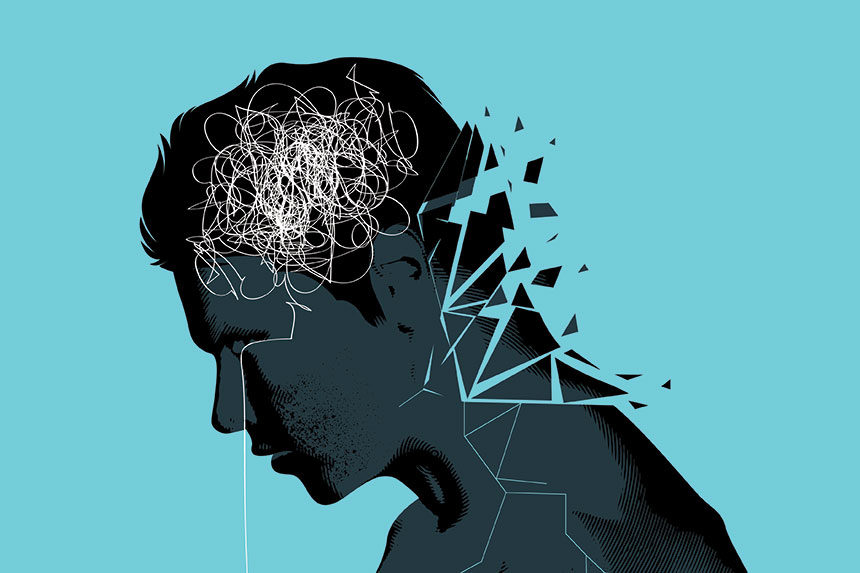
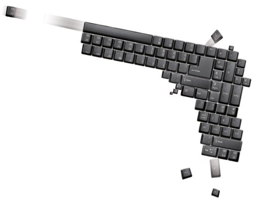

PROBLEM
Keyboard warriors are a person who is unreasonably angry and hides
behind their keyboard, typing screeds directed at an unseen audience.
They misuse the anonymity of the Internet because it is easy to
create anonymous accounts without any limitations. With these accounts,
they comment offensively usually against celebrities and influencers.
These keyboard warriors' malicious comments harm many people.
If anyone finds out that someone else is gossiping about themselves,
they will feel bad and bothered. Similarly, celebrities who have
been subjected to malicious comments from many keyboard warriors
suffer from much more extreme stress. Celebrities do not have
their own privacy like others and are bound to be mentally
devastated if they are cursed by an unspecified number of people
in such an environment. They eventually suffer from mental
illnesses, such as anxiety, depression, insomnia, and panic disorder.


In severe cases, those who suffer from mental disorders ends up
committing suicide. Many K-pop stars commissioned suicide due to
cyber-violence. Two such well-known K-pop stars are Sulli and Hara
Goo. Sulli, a female artist, and actress, did not wear bras
participating in a feminist campaign back then. After that, she
suffered from cyberbullying. Her Instagram account was full of
flamings. At first, she seemed not to care much about the flamings
and continued with her campaign. However, as she posted more photos
with participation in the campaign, more people were aggressive
against her and the extent of it became worse. She tried to
overcome her situation alone but eventually committed suicide.
About a month after Sulli’s death, a female artist, Hara Goo
committed suicide, too. Hara committed suicide because of a similar
reason. She suffered from rumors that she owed her looks largely to
plastic surgery and that there are sexual images of her. Those
images were illegally taken by her ex-boyfriend, and a rumor that
there are such images was spreading obviously without her consent.
After these rumors spread widely, she claimed to have mental health
problems and depression. She tried to sue those malicious
commenters, but her situation did not get better. She ended up
committing suicide. Likewise, keyboard warriors are cyberbullying
others, which leads to mental diseases and suicide.
Malicious comments from keyboard warriors harm not only those
targets but also third parties. Excessive malicious comments make
Internet users frown and feel bad. Also, children can easily access
the Internet these days. Children who form language and perceptual
abilities while watching and listening to various things imitate
the contents on the Internet. The internet changes their personalities.
This video on the right shows an experiment in which five-year-old artificial
intelligence (AI) watched the contents on the Internet for weeks and
then had conversation with his mom. When his mom asked "How was
the kindergarten today?", AI replied, "It was not fun because there
were only nerds," and when he was asked, "Dont you love me?" he said,
"Don't force me to love. I'm so annoyed with you," using slangs.
In this way, the Internet has a lot of adverse effects on children.
They use abusive languages and post malicious comments indiscriminately
these days due to what they see and learn from the internet.